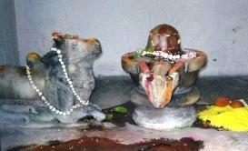

<?xml version="1.0" encoding="UTF-8"?><rss version="2.0"
	xmlns:content="http://purl.org/rss/1.0/modules/content/"
	xmlns:wfw="http://wellformedweb.org/CommentAPI/"
	xmlns:dc="http://purl.org/dc/elements/1.1/"
	xmlns:atom="http://www.w3.org/2005/Atom"
	xmlns:sy="http://purl.org/rss/1.0/modules/syndication/"
	xmlns:slash="http://purl.org/rss/1.0/modules/slash/"
	>

<channel>
	<title>Angeerayeshwar &#8211; Varanasi Temples</title>
	<atom:link href="index.html" rel="self" type="application/rss+xml" />
	<link>../../../../../index.html</link>
	<description>Temples of Varanasi as referred to in Kashi Khand</description>
	<lastBuildDate>Thu, 19 Jun 2025 05:16:46 +0000</lastBuildDate>
	<language>en-US</language>
	<sy:updatePeriod>hourly</sy:updatePeriod>
	<sy:updateFrequency>1</sy:updateFrequency>
	<generator>https://wordpress.org/?v=4.6.29</generator>
	<item>
		<title>ANGEERAYESHWAR</title>
		<link>../../../../../shiva-temples/angeerayeshwar/index.html</link>
		<pubDate>Sun, 09 May 2010 05:47:18 +0000</pubDate>
		<dc:creator><![CDATA[admin]]></dc:creator>
				<category><![CDATA[Angeerayeshwar]]></category>
		<category><![CDATA[Other Shiva Temples (A-D)]]></category>
		<category><![CDATA[Shiva Temples]]></category>

		<guid isPermaLink="false">../../../../../p=276.html</guid>
		<description><![CDATA[Kashi Khand, Chapter 18 mentions that various Lings have been installed in the holy city of Kashi by great Rishis (Sages).  It is worth mentioning here that on account of intense prayers to the Lords, the Sages have attained divine powers. In Harikes gardens, Sage Angeeras has installed a Shiv Ling which is known as [&#8230;]]]></description>
				<content:encoded><![CDATA[<p>Kashi Khand, Chapter 18 mentions that various Lings have been installed in the holy city of Kashi by great Rishis (Sages).  It is worth mentioning here that on account of intense prayers to the Lords, the Sages have attained divine powers.</p>
<p>In Harikes gardens, Sage Angeeras has installed a Shiv Ling which is known as Angeerayeshwar.</p>
<p></p>
<p>&nbsp;</p>
<p style="text-align: center;"><strong>(ANGEERAYESHWAR)</strong></p>
<p>Devotees who worship this Ling will achieve Tejas (radiant energy) and will reach heaven after death.</p>
<p>&nbsp;</p>
<p><strong>&#8212;&#8212;&#8212;&#8212;&#8212;&#8212;&#8212;&#8212;&#8212;&#8212;&#8212;&#8212;&#8212;&#8212;&#8212;&#8212;&#8212;&#8212;&#8212;&#8212;&#8212;&#8212;&#8212;&#8212;&#8212;&#8212;&#8212;&#8212;&#8212;&#8212;&#8212;&#8212;&#8212;&#8212;-</strong></p>
<p><strong> </strong></p>
<p><strong>Kashi Khand, Chapter 18, Shlok 20</strong></p>
<p><strong> </strong></p>
<p><strong>हरिकेशवने रम्ये दृष्वैवान्गिरसेश्वरम्</strong></p>
<p><strong>इह लोके वसेद्विप्र तेजसा परिबृम्हित:</strong></p>
<p>&nbsp;</p>
<p><strong>By having darshan of Angireshwar Linga in beautiful Harikesh forest, one gets abode in this (Prajapati) world after being filled with brilliance. </strong></p>
<p><strong> </strong></p>
<p><strong>&#8212;&#8212;&#8212;&#8212;&#8212;&#8212;&#8212;&#8212;&#8212;&#8212;&#8212;&#8212;&#8212;&#8212;&#8212;&#8212;&#8212;&#8212;&#8212;&#8212;&#8212;&#8212;&#8212;&#8212;&#8212;&#8212;&#8212;&#8212;&#8212;&#8212;&#8212;&#8212;&#8212;&#8212;&#8212;</strong></p>
<p>&nbsp;</p>
<p><strong><span style="text-decoration: underline;">LOCATION OF ANGEERAYESHWAR</span></strong></p>
<p>Angeerayeshwar is located at D-35/77, Jangambari Mutt, Jangambari, Varanasi.  This is a famous place and can be reached by rickshaw.  The Shiv Ling is located on the right side when a devotee enters the main gate.</p>
<p>&nbsp;</p>
<p><strong>Please watch our YouTube Video about Angeerayeshwar at following Link</strong></p>
<p>&nbsp;</p>
<p><a href="https://www.youtube.com/watch?v=xmi58I4NvYI&amp;t=2s">https://www.youtube.com/watch?v=xmi58I4NvYI&amp;t=2s</a></p>
<p>&nbsp;</p>
<p>&nbsp;</p>
<p><strong><span style="text-decoration: underline;">TYPES OF POOJA</span></strong></p>
<p>The Ling is installed inside the premises of Jangambari Mutt. However, devotees can have darshan as per their convenience.  People can perform pooja on their own. Our enquiries revealed that the place of worship is open from 06.00 a.m. to 09.00 p.m.</p>
]]></content:encoded>
			</item>
	</channel>
</rss>
